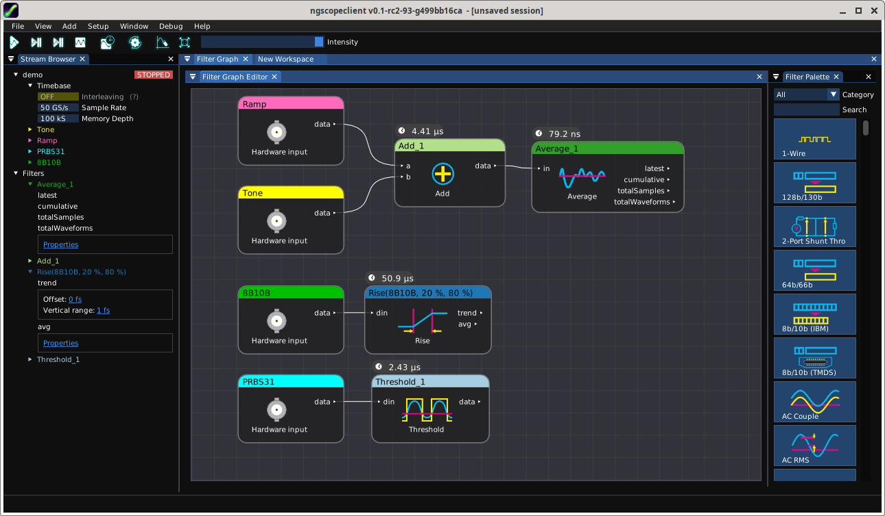

The filter graph editor allows complex signal processing pipelines to be developed in a graphical fashion. It may be accessed from the Window / Filter Graph menu item.
NOTE: While the graph editor can be floated or docked just like any other window in ngscopeclient, there is a clipping bug (scopehal-app:572) causing the graph view to be drawn incorrectly or not at all when not docked. The workaround is to only interact with the filter graph when it is in a docked state.
The graph editor view (Fig. 8.1) shows nodes for every instrument channel, trigger, and filter block in the current session. As new instruments, channels, and filter blocks are added to the session, new nodes will automatically appear in the graph editor view. Nodes cannot overlap and will automatically move out of the way if another node is dragged on top of them.

The view may be zoomed with the mouse wheel, or panned by dragging with the right mouse button, to navigate large filter graphs which do not fit on a single screen. Right clicking on a node opens a pop-up properties view (Fig. 8.2).
Nodes display inputs at left and outputs at right. To connect two existing nodes, click on an input or output port and drag to the port you wish to connect it to. An input can only connect to one output at a time; if the destination already is connected to a different signal the previous connection will be removed and replaced with the new one.
A tooltip with a green plus sign is displayed during dragging if the proposed connection is valid. If the tooltip displays a red X instead, the connection is invalid (connecting two inputs, two outputs, or an input and output of incompatible data types).
To create a new node, click on an input or output port and drag to an empty area of the canvas (Fig. 8.3). A context menu will appear, presenting a list of filters which can accept (if dragging from an output) or produce (if dragging from an input) the desired data type.
When a new block is added to the filter graph, each output channel will be automatically added to an existing waveform view if a compatible one is present. If no compatible view is available, a new view and/or group will be created.

Node title bars are color-coded to match the display color of the waveform trace, allowing easy navigation between waveform views and the graph editor.
Basic math blocks show icons in the graph editor view, allowing easier understanding of complex signal processing pipelines. Icons are gradually being added to more protocol decodes and filters to improve legibility.